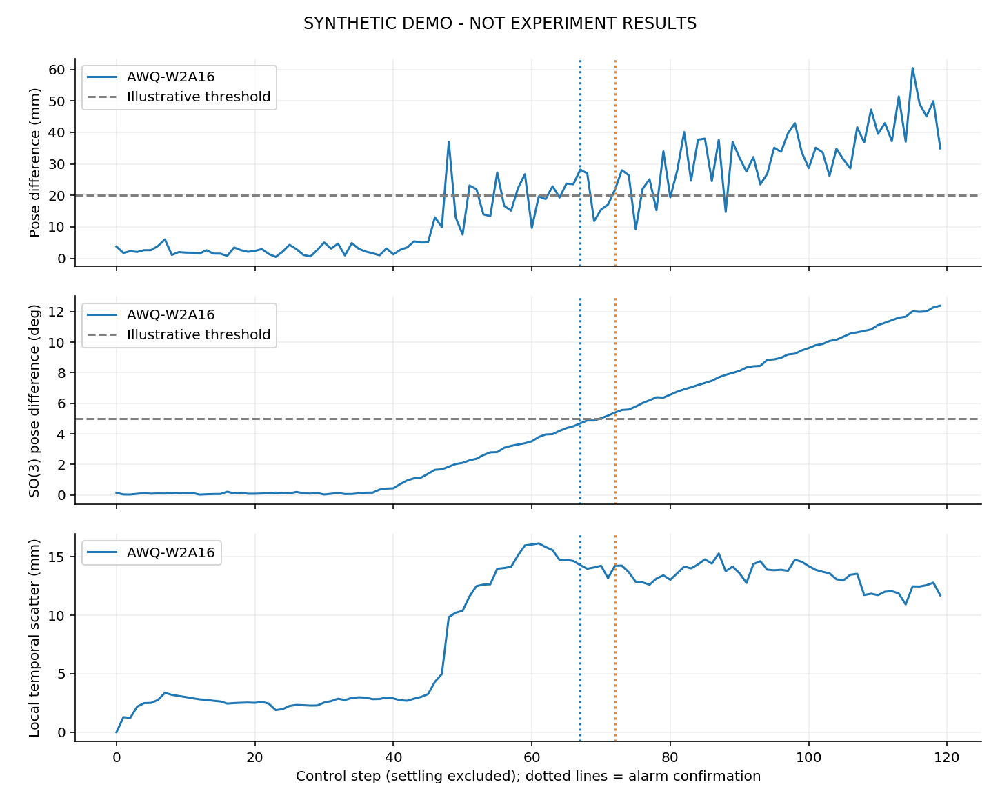
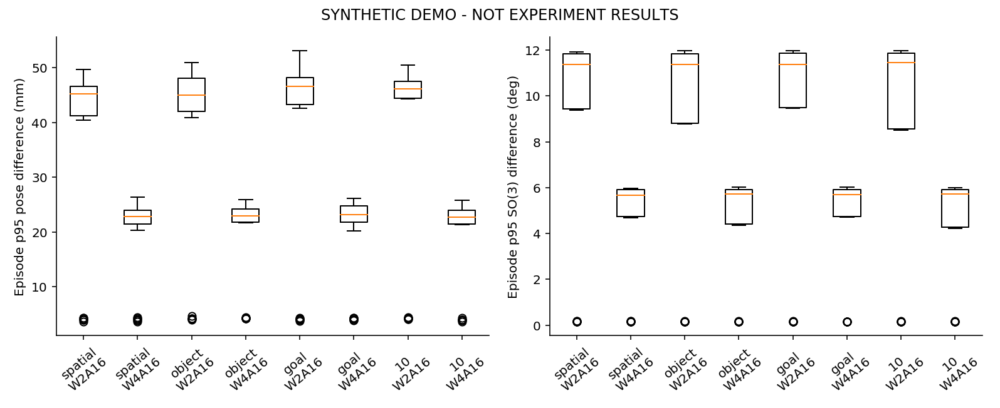
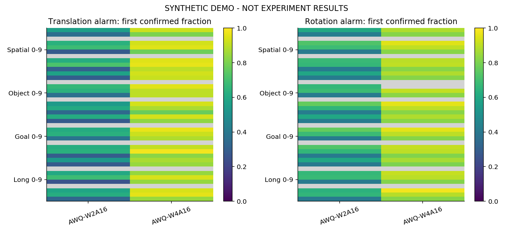
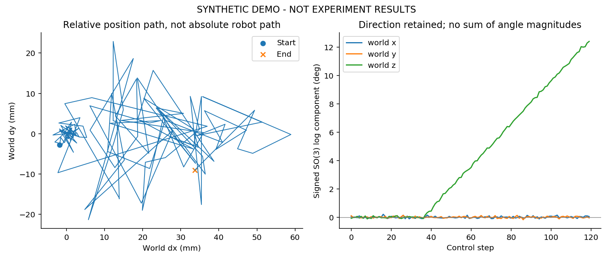
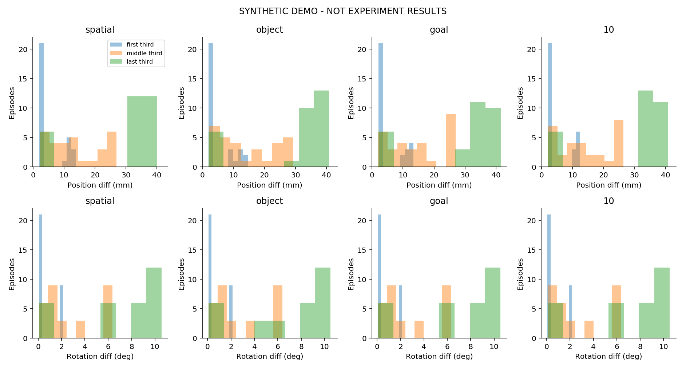
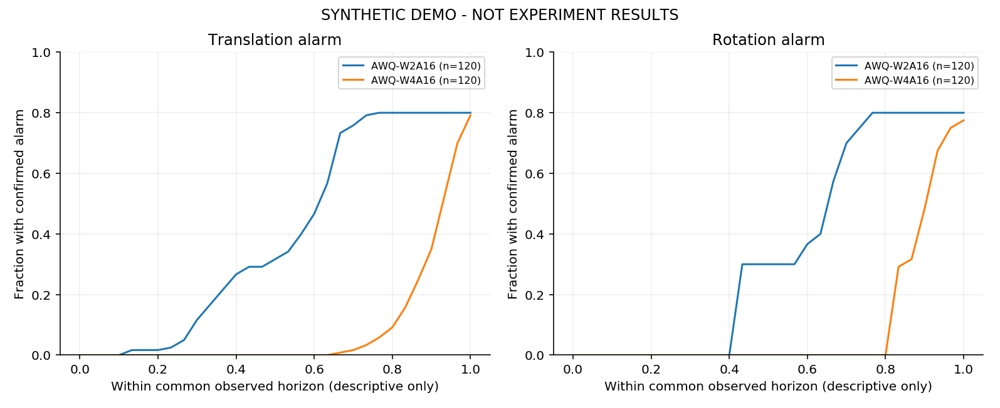

Six views; no experimental success-rate claim. Gray heatmap cells = no detected alarm; white = missing pair coverage. Colored cells summarize only detected cases: read per-cell denominators in analysis.json. Threshold crossings are not causal failure proofs.





